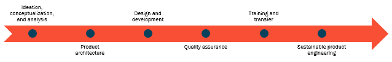
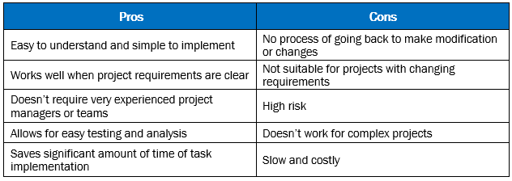
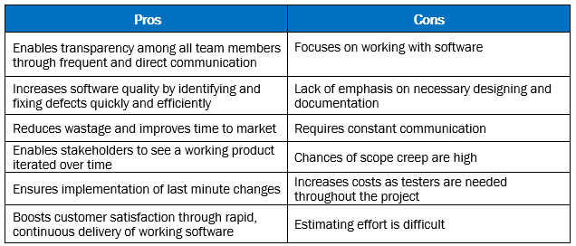
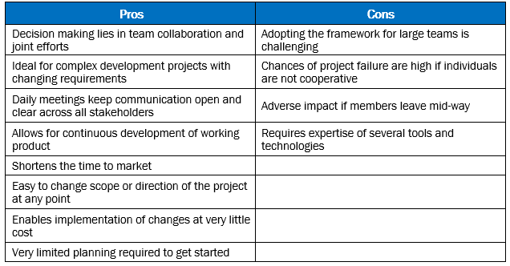

The software product development process is a fundamental tool for facilitating a large number of people to work together on a collaborative project. Since the outcome of a methodical approach is fewer defects, it ultimately drives shorter delivery times and better value. By structuring, planning, monitoring, and controlling the process of development, the software product development process enables the following benefits:
Software Product Development Process
The main aim of the process is to ensure an optimum level of discipline to deliver a quality product and to avoid wasted time, money, and effort. The ideal software product development process consists of the following phases:

1. Ideation, Conceptualization, and Analysis
The ideation phase involves an analysis of the problem statement as defined by the customer. By extracting key requirements, developers ideate a proper solution which can fulfil the customer’s need. Conceptualization involves formulating the idea or concept; once the scope of the project is defined, a list of desired design features and requirements is created.
2. Product Architecture
The product architecture is the foundation of a software system that comprises key elements, hosting network, and the development environment with data modules. By designing the product architecture, you can make sure the software system will meet the current requirements of the customer, and also ensure that future requirements can be addressed and accommodated.
3. Design and Development
The requirements are broken down further to forecast the timeline and estimate efforts; once requirements are clearly detailed, technical resources are identified, specific tasks are assigned to each individual, and they are provided with the necessary documentation required to begin the development process. Specific designs and workflows for the application as well as the tools and technology on which the solution will be built are identified. Based on the development approach, tasks are broken down and the product can be completed within the defined timeline. Several key documents including the design document, the functional requirement specification document, and coding standards that will be followed during the final delivery are created.
4. Quality Assurance
Since quality is key to the success of any software product, the quality assurance stage involves build installation, system testing, bug fixing, user acceptance testing (UAT), and test report generation. After a release has been completed, the development and testing phases are performed iteratively as issues are found, corrected, and verified. At the end of this phase, a stable product with minimal issues is ready for deployment. It is always best to allow time for UAT testing before approving an application for production implementation.
5. Training and Transfer
The transfer of product knowledge from the individual, team, department, or organization onto the customer characterizes this phase. During this phase of knowledge transfer, change requests, impact analysis, and all pending documentation is completed. At the end of this phase, the development team hands over all the aspects of the project to the customer including code, documents, and software licenses.
6. Sustainable Product Engineering
Sustainability ensures that the software will continue to be available in the future, on new platforms, and meeting new needs. Sustainability ensures the software product is easy to evolve, satisfies its intent over time, survives uncertainty, and supports relevant concerns. The way sustainability is approached will depend on many factors, such as how important the software is, its maturity level, the size of its community, and the resources available for achieving sustainability.
The Different Software Product Development Methodologies
There are several software development methodologies in the market today, each offering a different set of benefits: from improved process efficiency to minimized risk, enhanced scalability to continuous iterations. Here’s a look at the three most popular software product development methodologies –
waterfall, agile, and scrum – and see which one serves your business needs best.
Waterfall
One of the earliest software development methodologies, the waterfall model incorporates a series of sequential steps: conception, initiation, analysis, design, construction, testing, production/implementation, and maintenance. Since the model ensures distinct goals are accomplished, it is ideal for projects where requirements are clear and also for projects where detailed, precise, and accurate documents describe how the system is to be produced.

Agile
The agile method works on an iterative approach, where new releases of the system are created and made available to customers every few weeks. For each stage of the product, more features can be tested, added, and again tested after getting feedback from customers. Since each team works in parallel, checking for product quality all along, agile methodology saves time and ensures the end product meets the intended requirements.

Scrum
Scrum, a subset of Agile, is used to manage the software product development process at the macro level. It deploys an incremental approach and follows the values and principles of agile; in addition, it covers further definitions and specifications by considering some critical software development practices. Most scrum principles are borrowed from the Agile methodology: especially related to customer feedback and fast increments. This approach is best suitable for products with changing requirements.

Path to Success
With companies investing considerable time and effort in developing software, yet being at risk of failure, the significance of the
software product development process is irrefutable. The major outcome of following a prescribed software development process is that it will give code development and project execution fluency to all of the project stakeholders. It enables system requirements to be tracked to the business needs and provides a solution that best fits needs. By considering the pros and cons of the methodology, choose the model that works best for your organization
and embark on the path to success.